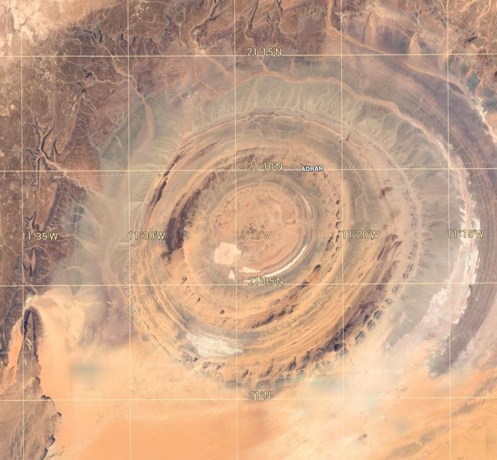

In early October 2021, I established a task request asking for those versed in LD and other skills to investigate whether or not there were any “backdoors” or other ways in and out of the “Old Empire” “Prison Complex” that we are all (unfortunately) part of. By the second week of October the results began to pour in. The first group of results was posted HERE.
This is a posting of subsequent results.
Volunteers
I asked in this post if any MM readership would be interested in joining The Domain to help rescue their “Lost Battalion”.
The response was overwhelmingly positive.
And then within a few days after the readership started adding affirmations and confirmations that they wish to help The Domain, be a Rufus, and do whatever they can contribute, many many MANY of them started writing to me privately.
They were (for the most part) terrified.
Within hours or days of making a verbal affirmation that they indeed wanted to assist The Domain, all of them, every single one of them, experience sleep paralysis and horrible fears and manifestations. All of which is very similar to “abduction events”.
That they were “hijacked” in their dream state and all sorts of operations and procedures occurred. For them, it was truly frightening.
However, I said then, and I will say now…
- In the non-physical reality, thoughts take on tangible form.
- Fears are used to control you.
- So when you experience any type of help, your fear-defenses (part of the “Old Empire” programming), will try to make you fight and prevent the assistance.
So keep in mind…
- To help The Domain, certain retardations and alterations to your inmate human body must be undone.
- This requires an operation; a procedure.
- The Domain will undo those alterations when you join in the effort. They will conduct an operation and perform a procedure to remove those “chains” and “blocks” that you have shackled to your non-physical body.
- Do not fear it. You NEED to have it done, whether you want to help the Domain or not.
- It is a medical procedure.
Many people have commented on this event as a “dream”, or a “Join the Domain related dream”.
Janus Mission Briefing
This is from an anonymous MM lurker that communicates with me by secure means. He is an expat like myself. He is prior SAP like myself. He is retired like myself, but unlike myself he fled the ‘States before he could be formally “retired”. You all can leave messages and your thoughts about his experiences on the forum or in the comments. He will read them, but he will not comment on them directly. In this matter, I act as an intermediary. -MM
I have been unwilling to 'Go under' for some time now. To be honest I have been scared. I've previously had some success with Lucid Dreaming, but I have much more control in OBE (Out of Body Experience/astral travel etc.). The problem was, the minute I 'let go of the rope' I feel like being kidnapped. Not unlike being sucked into the giant vacuum cleaner. It feels like somebody is waiting for me at the entry point (not a good word, it's more like bopping to 3D from 2D). Like they were ready for me. That has never happened to me before. OBE has always been a joyous, refreshing and FREE state. Now it's scary and that sucks. I thought they were the Prison Guards but didn't stick around to ask questions. Then I read the experience of others, and it dawned on me. It was The Domain scrubbing away the prison colors, so I wouldn't be spotted right away! I have the house to myself the whole day, I will attempt an entry now.
Janus 10-18-2021, 09:30 AM
The “Join The Domain Dream”.
I am only now able to write about it all. I had to do 60min deep meditation to thoroughly rinse my mental palate of disgusting gunk that covered my consciousness.
After I understood that the kidnapping was for my own protection, I didn’t try to evade it. As soon as I released myself from my body, I felt like I had grown an umbilical core and was pulled by it.
I let it happen.
After a period of time that was from nanosecond to a lifetime (I really don’t have any frame of reference for time there), I found myself suspended in a rig. I knew instantly that I have been in this before, many times apparently.
What happened next was without a doubt the most intensely unpleasant experience of my life. I felt like being skinned alive with a butternife.
It wasn’t sharp pain, it was more like a too heavyhanded massage. It lasted as long as it did, again no way of telling the time in any meaningful way.
I was no longer in the rig, it was more like a lounge-chair from the future.
The material felt like a memory-foam but better. I felt weightless and totally supported at the same time. I was unable to move, wasn’t able to even try to move.
Next sensation I felt, was like my head was held in a vice.
You know how to boil a frog? That happened just like it; initially I felt no discomfort, then the grip was so strong I thought my eyes would pop out.
Thia is difficult to verbalize.
My brain was rinsed.
I felt very close to dropping out of the OBE, perhaps I did. I felt my consciousness being totally independent and outside my brain and body, but I could still feel powerwashers drumming my sclera or cortex. I could feel dozens of small needle like thingies getting dislodged from the brain-tissue.
I somehow blacked out, there was a clear cutoff, because I was no longer held or suspended.
Now I was very much THERE.
I felt fit, my vision was disturbingly clear and vivid, like I was using my eyes for the first time. But it wasn’t my eyes I was seeing thru.
I was ‘sensing’ everything.
I knew I was able to sense ultraviolet light as well as infrared, and then some. Do you remember the scene from Matrix, where Neo is able to see the code for the first time?
That was it to the T.
The whole episode felt like getting an oil-change, tires rotated, new spark-plugs and a coat of paint; I didn’t get superpowers, but more like superUSER powers. It felt like I could see thru walls and distinguish between players and NPC’s. To use an American vernacular, I felt like a million bucks!
But I felt totally spent at the same time.
I swam back to the surface.
I opened my eyes and realized that I was sweating like a pig. Only 30 minutes had passed, it felt like a lifetime. I took quick dip in the almost freezing lake and planned my next move. I was in flames to try my enhanced abilities, but on the other hand I was very tired.
Lucid Dream Attempt
I haven’t been very successful in Lucid Dreaming lately, but part of it was the nagging fear of getting kidnapped.
Why not give a go? Worst case, I Could fall asleep.
I went to bed, just over the covers, not between the sheets, and took a keychain in my hand.
I was in a shopping mall. The Mission was to look for open entry points or hidden backdoors. I took the escalator to the bottom floor. Doors opened, and I saw the place crawling with NPC/guards. I saw a an old woman trying to go out thru the main doors. There were four revolving doors, she went to the second from right. I looked at her as she stepped into the revolving door.
As on command, all the NPC’s turned to look at her as well, grinning. The door sped up. It looked like a dust-devil. After a few seconds the door slowed down, the woman was gone, but not outside.
Ok, four exits, check.
Viability as possible rally/entrypoints: zero.
I was at the bottom floor, so it seems that only way is up. As I was sneaking back to the elevators, another thought struck me.
> You are standing in front of a door. You see corridor to your right. > _
When I was a teen I played a lot of these text-based games. One of the game-designers Holy principles is “The unintuitive move is the right move”. If the only rational move is to open the door in front of you, you can bet your ass there’ll be Dragons behind it.
The revolving doors were enter only, manned with killer-bots, and a death-trap if you try to exit.
The elevators go from “E” to “10th floor, women’s lingerie”.
There was bound to be a skylight that opens or a hidden staircase. This took forever to write, but dream-time is non-local, and time there is an irrelevant artifact.
I was descending the hidden stairs before I finished the thought.
I went down and flipped 180 degrees emerging up. Very weird sensation. It was like a move I knew how to do, but have forgot. Like learning to fly by jumping up and forgetting to come down.
I came up and I kept going up until I was so far from the ground that I spotted a familiar looking beach, some mountains over the left. I was looking to east, south-east, the beach was behind me.
I was in West-Africa, somewhere around Senegal or Gambia.
That’s not so bizarre as it sounds, I’ve been there several times. I even ran an NGO in Gambia. I was up north, Mauretania, I think. The place I went through looked like a target. X marks the spot, eh?
Anyway I tried to spot the place in Google Earth just now.
Holy Shit!!
.

Caldera.
I need to drop this off to you now. I haven't even read this through. Sorry about poor penmanship, I just needed to write this down before it goes away. You can share it with the class, if you wish.
Conclusion
Warning: Please take general caution against getting too excited about any particular place on LD/RW/Astral.
Do you see what happens when we all work together as part of a team? This image resembles a volcanic island, only not in the ocean. Yet, I would hazard a guess that around the time when this entire planet was set up as a Prison Planet that this area was covered in water. This goes together and add a lot of interconnected puzzle pieces to the mix. I cannot wait for others to report on their findings.